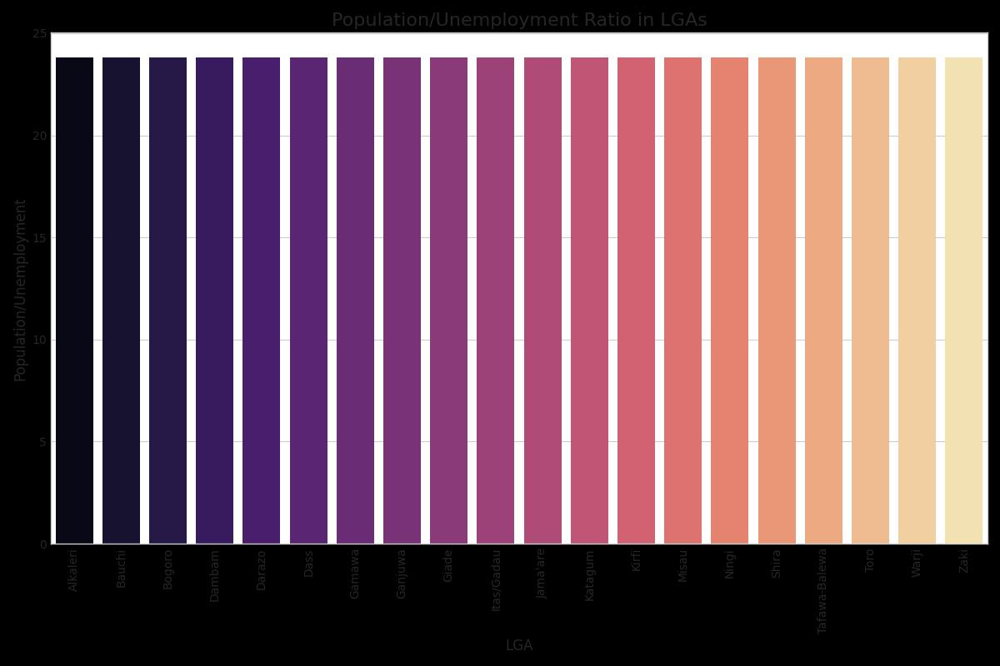
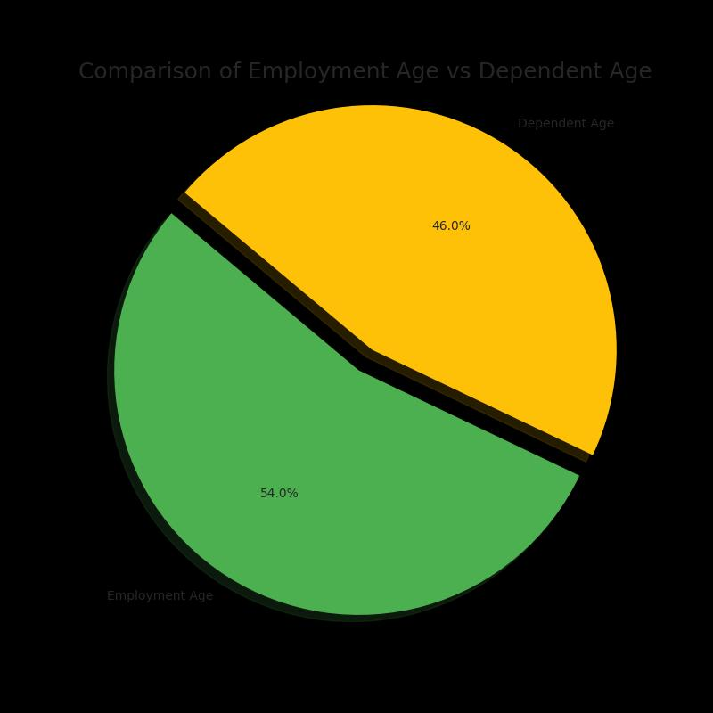
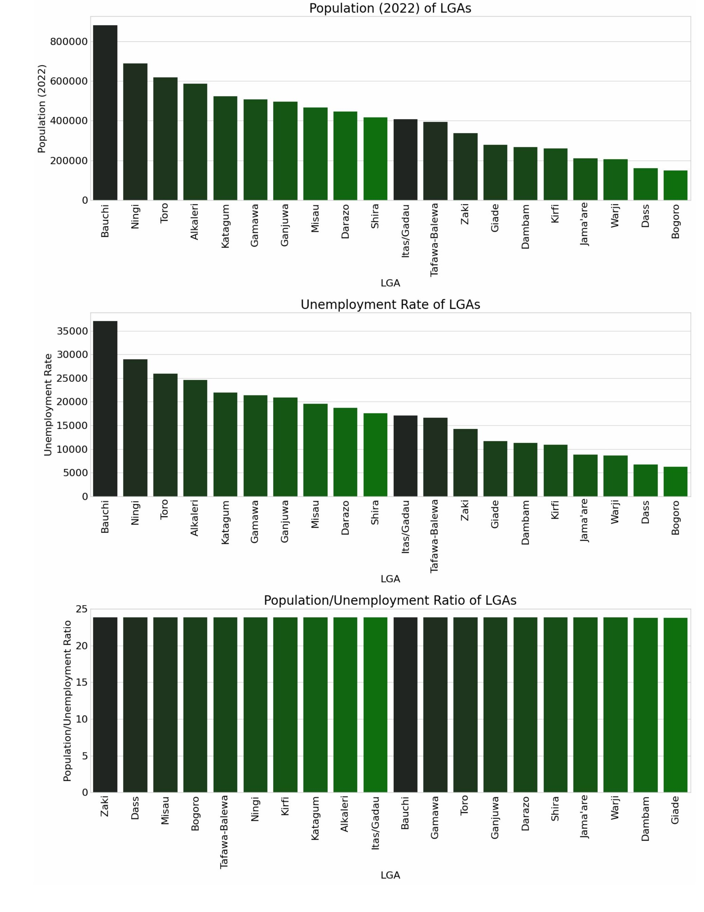
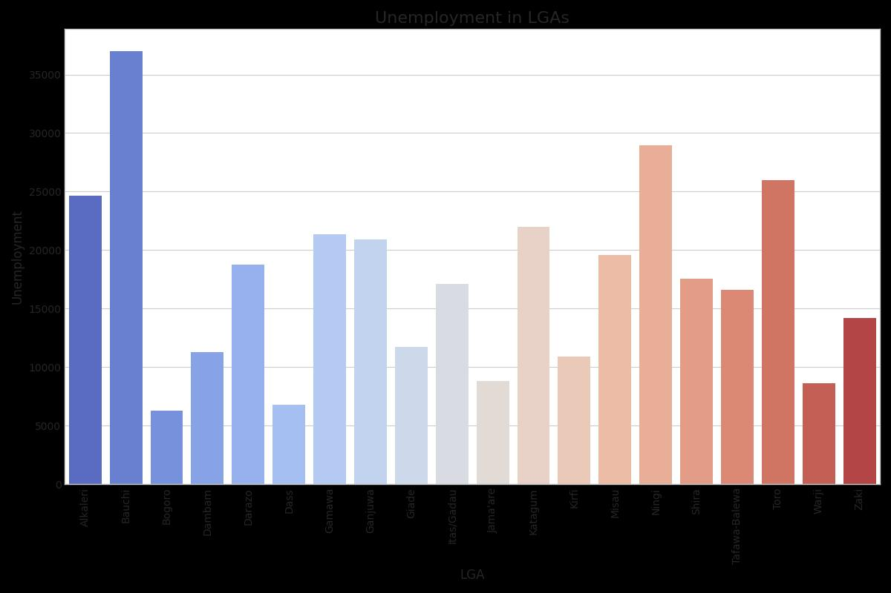

Population and Employment Analysis Plots





Bauchi State, located in northern Nigeria, is undergoing a rapid transformation. To support this growth, a comprehensive career guidance system is essential to bridge knowledge gaps, foster skill development, and empower individuals to make informed career choices.